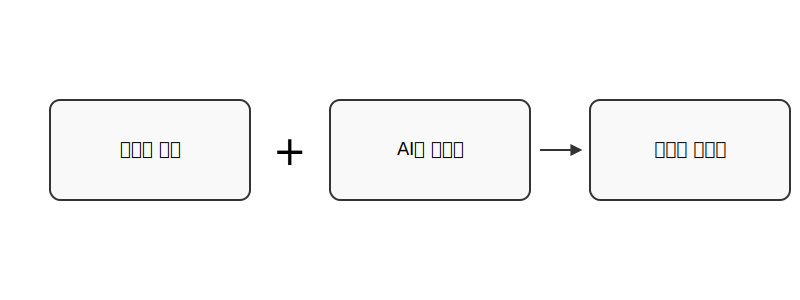
"데이터와 코딩의 필요성은 꼭 AI 때문만은 아닙니다. 그 자체의 당위성을 먼저 설명하고, AI가 그 이유를 더 강해지게 만드는 흐름이 되어야 합니다." "나아가, '그동안 이 지식을 배워놓지 못해서 손해였구나' 라는 생각이 드는 일상적인 사례를 중심으로 풀어주면 좋겠습니다."
"데이터와 코딩의 필요성은 꼭 AI 때문만은 아닙니다. 그 자체의 당위성을 먼저 설명하고, AI가 그 이유를 더 강해지게 만드는 흐름이 되어야 합니다."
"나아가, '그동안 이 지식을 배워놓지 못해서 손해였구나' 라는 생각이 드는 일상적인 사례를 중심으로 풀어주면 좋겠습니다."
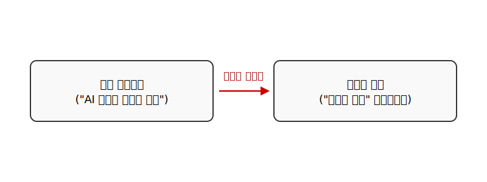
"'데이터는 흔적이다' 라는 표현을 좋아하는데, 이걸로 시작하면 좋겠습니다." "데이터의 기본인 표(Table), 행(Row), 열(Column)부터 시작해서 특징(Feature), 라벨(Label), 차원의 개념으로 빌드업해주세요." "마지막에는, 딥러닝이 비정형 데이터의 특징 추출을 자동화했다는 설명으로 마무리하면 좋겠습니다."
"'데이터는 흔적이다' 라는 표현을 좋아하는데, 이걸로 시작하면 좋겠습니다."
"데이터의 기본인 표(Table), 행(Row), 열(Column)부터 시작해서 특징(Feature), 라벨(Label), 차원의 개념으로 빌드업해주세요."
"마지막에는, 딥러닝이 비정형 데이터의 특징 추출을 자동화했다는 설명으로 마무리하면 좋겠습니다."
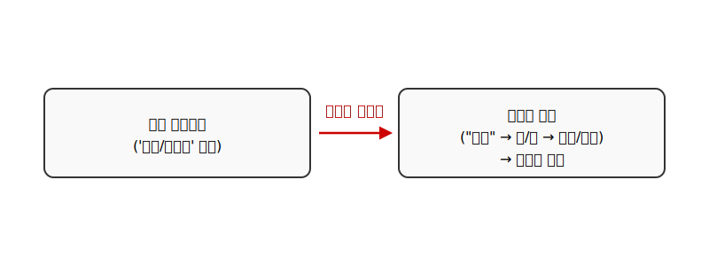
"이미지를 못 만드나요? SVG 같은 파일로 간단한 형태의 이미지를 구성할 수 있지 않나요?" "상세한 그림이 아니라, '박스 + 텍스트' 형태의 매우 단순한 다이어그램을 원합니다."
"이미지를 못 만드나요? SVG 같은 파일로 간단한 형태의 이미지를 구성할 수 있지 않나요?"
"상세한 그림이 아니라, '박스 + 텍스트' 형태의 매우 단순한 다이어그램을 원합니다."
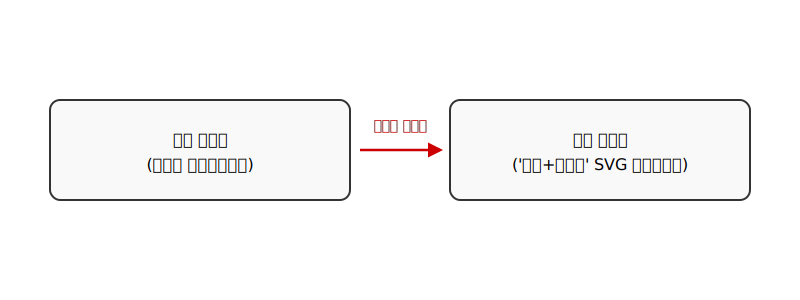
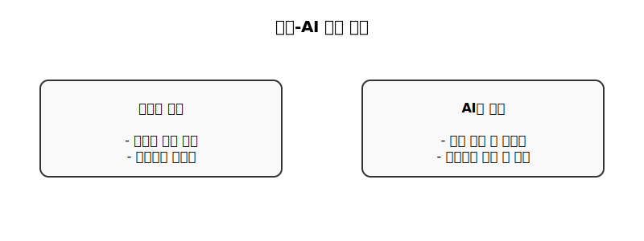
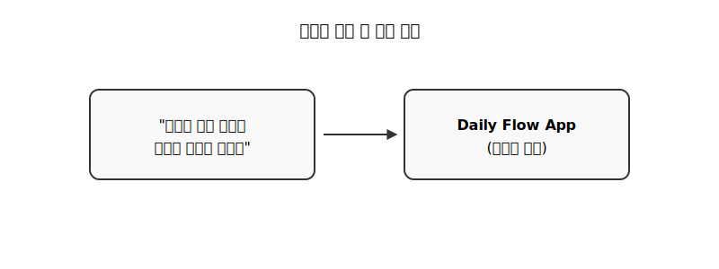
PLAN.md
PRD.md
TASK-001.md
"docs에 있는 최초 문서부터 life-management-app 을 구성하면서 claude code를 이용하여 진행한 내용 전체를 정리할거야. 오늘 한 작업에만 국한하면 안돼"
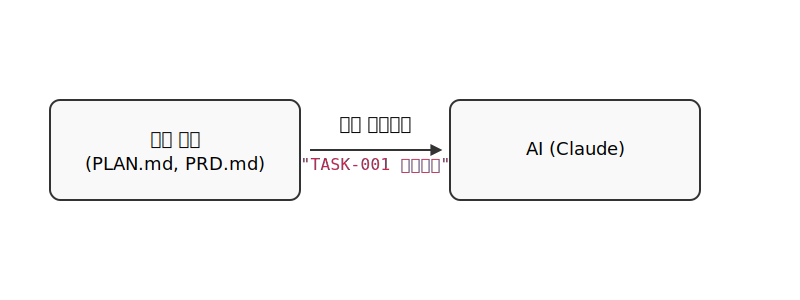
"이번에는 '주간 계획' 페이지를 작업해야해. 메인 포맷에 형태를 맞추고..."
"왼쪽 오른쪽 화살표 버튼과 달력 선택 UI를 이용해서 이전 주로 이동하는 UI가 추가로 있으면 좋겠네."
"커밋"
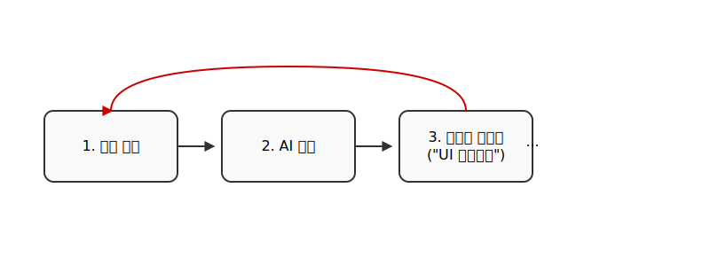
"'프로젝트 관리' 페이지가 메인 포맷과 형태가 안맞아." "상세보기쪽에 할일이 추가된 마일스톤들이 있는데 할일이 안보이네?"
"'프로젝트 관리' 페이지가 메인 포맷과 형태가 안맞아."
"상세보기쪽에 할일이 추가된 마일스톤들이 있는데 할일이 안보이네?"
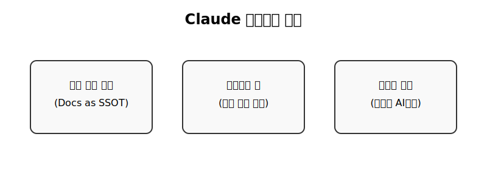
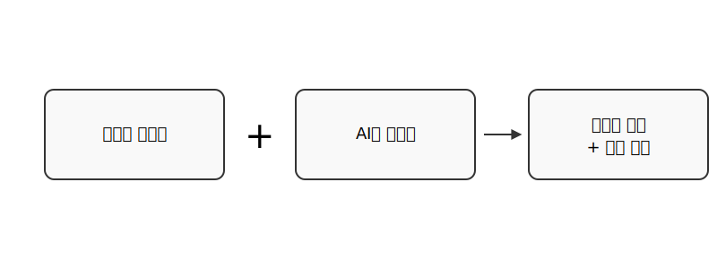
가사 포맷: "섹션은 (Verse 1)과 같은 괄호로, 섹션 사이는 한 줄 띄어쓰기, 코러스는 'x2' 대신 전체 반복" 커버 아트: "하단 우측에 회색 타이포, 사진은 시네마틱 톤" 파일 구조: "musician/아티스트/앨범명/[트랙번호] 곡명.md 형태로 정리"
가사 포맷: "섹션은 (Verse 1)과 같은 괄호로, 섹션 사이는 한 줄 띄어쓰기, 코러스는 'x2' 대신 전체 반복"
(Verse 1)
커버 아트: "하단 우측에 회색 타이포, 사진은 시네마틱 톤"
파일 구조: "musician/아티스트/앨범명/[트랙번호] 곡명.md 형태로 정리"
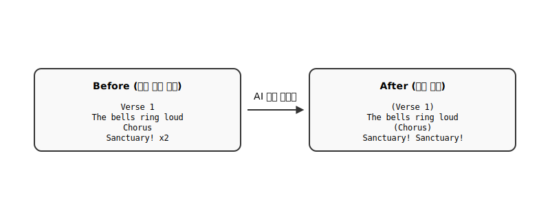
apply_patch
shell
ALBUM_WORKFLOW.md
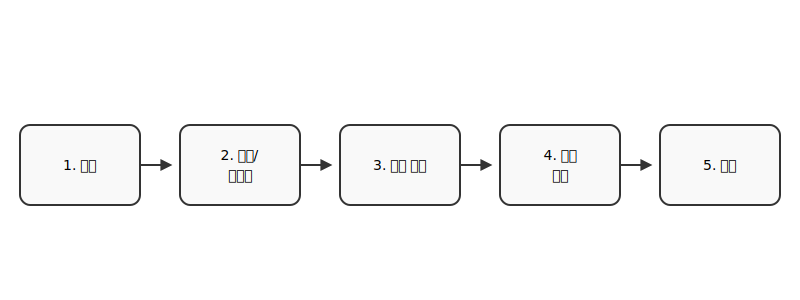
"앨범 내에 최소 3가지 이상의 다른 곡 구조를 사용해주세요." "같은 구조나 템포의 곡이 연속으로 오지 않게 배치해주세요." Exclude: "이 곡의 스타일 프롬프트에서 'choir'와 'epic'은 제외해주세요."
"앨범 내에 최소 3가지 이상의 다른 곡 구조를 사용해주세요."
"같은 구조나 템포의 곡이 연속으로 오지 않게 배치해주세요."
Exclude: "이 곡의 스타일 프롬프트에서 'choir'와 'epic'은 제외해주세요."
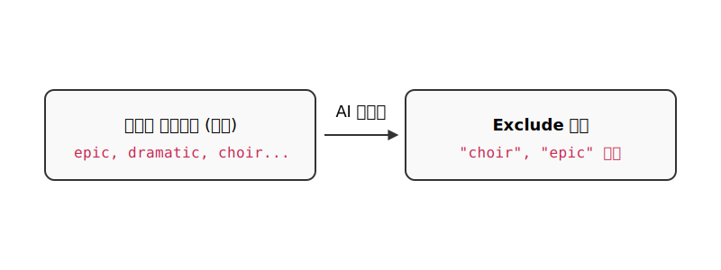
Exclude
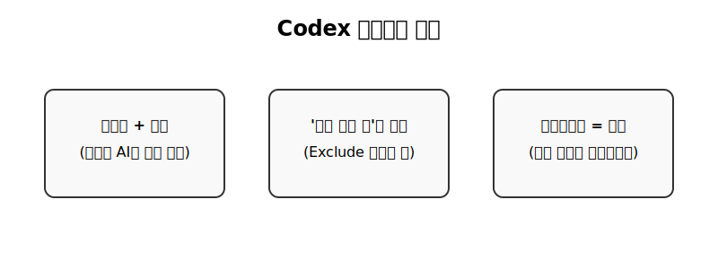
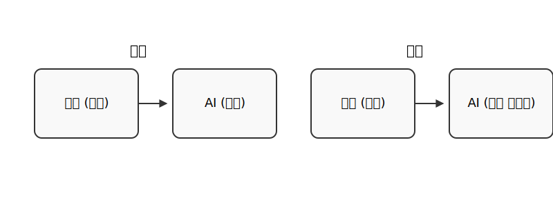
"우리 서비스의 지난 1년간 고객 데이터를 보고, 이탈 고객 그룹의 주요 특징을 5가지 찾아내고, 그 원인에 대한 가설을 3가지 제시해줘."
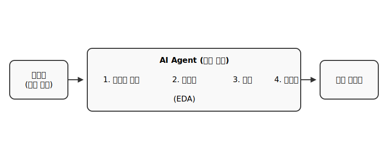
"최근 발표된 '청년 주거 안정 대책'에 대한 국내외 유사 정책 사례와 각각의 장단점, 그리고 예상되는 재정 부담에 대한 보고서 초안을 작성해줘."
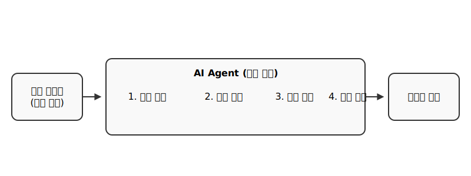
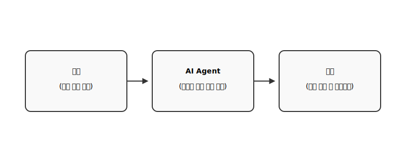